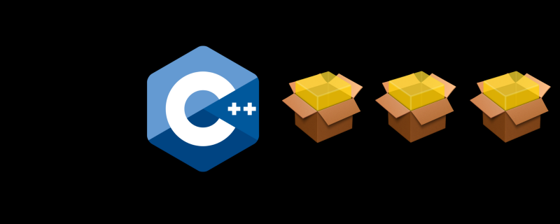

March 3, 2018
Accio Dependency Manager

You may have noticed a number of “What should go in the Standard Library” posts over the last few days. These posts have generated quite a bit of comments on Reddit and discussions on Slack. I hope more people chime in.
The conclusion is that we pretty much all agree to disagree on what the STL is or should be. I’m not sure we can even agree on what C++ is. Which tells you everything you need to know about C++.
But there is a common sentiment transpiring from these discussions : “It would be pretty great if C++ had a package manager”. Something universal, powerful and easy to use.
Meanwhile the C++ Committee is doing a survey ( which you should take if you are a C++ developer), Asking “How would you change C++ if you had a Magic Wand ?”
Maybe we can use our magical powers to materialize a dependency manager out of thin air ? That would be pretty awesome.
The first problem is that our spell only works if we can form a very precise mental model of what that dependency manager looks and acts like.
An Imaginary Dependency Manager
While discussing about it on the CppSlack, it became clear that people may not know what a dependency manager is. Or have varying opinions of what it is or ought to be.
For some, it’s a way to manage headers in a given project or a tool to get rid of useless headers. Arch users were keen to let me know pacmac is all one ever needs.
For me, simply, a dependency manager is a tool that lets me include an external dependency in my project. In exactly one simple command.
But… what’s a dependency ? It may be a library, or a header only library. But take Qt for example. It has moc, rcc, uic and a bunch of other supporting binaries. So maybe a dependency can also be a tool/binary. But what if a project depends on llvm 7 , should that be a dependency ? Maybe ? I mean, why not ? Of course, system-provided libraries and packages should be preferred when available.
As pointed out by Titus Winters, if we speak of “*Package Manager*”, people may assume the tool deals in binaries, and it’s probably not what we want (more on that later). Therefore, the term dependency is certainly more appropriate than “package”.
We should also not conflate a “*system package manager*” with a “dependency manager”.
A “*system package manager” *( aptfor example ), should be reserved for the installation of tools and applications, not something you use to manage the building blocks of a development project. And our “dependency manager” should not try to install things system wide. Linux distributions ( or brew ,chocolatey …) have their way of doing things and we should not interfere with that.
The corollary is that, at no point, our tool should require root access. Never. Ever.
An Authoritative Dependency Manager
We still don’t even know how our mythical tool would work, but we know that it needs to be authoritative. We can’t afford multiple systems, because then different projects would use different, incompatible systems, and the initial premise of easily including any dependency in a project falls flat. We need exactly one package manager.
Very few entities can manage that. I think that ideally it would need to be a concerted efforts by the C++ Committee ( whose prerogative does not extend beyond the design of the language) and major industry players (who may not agree with each other) and maintainers of existing tools. It’s a lot to dream for. But if every one continues to roll out their own tools I’m afraid we won’t ever get far.
Note that it does not have to be perfect for everyone. But a large majority of users need to agree that’s it’s good enough and see the value in publishing their libraries on it.
That does not necessarily mean that the system needs to be centralized. A centralized system would require an entity dedicated to maintaining it which would require money. It’s also unreliable and would mandate an access to internet which a lot of companies don’t provide their employees with. It may also not stand the test of time.
People will also want to have company-wide repositories for their internal projects.
Therefore our magical dependency manager provides
Easy set up of a repository
Easy setup of mirrors
But it’s also very important that people can easily find and discover libraries, therefore we need a centralized index. Ideally, that index would be accompanied by a slick website where people can read a description of the library and maybe some statistics attesting of its popularity. Maybe a categories or tags system, license information, supported compilers/systems/architectures…
It may seem unnecessary, but those the kind of things that would make the language more accessible.
A sane naming scheme
Ideally, no two C++ packages have conflicting identifiers. The first thing we can do is namespace package identifiers using an organization name, like Github does. So bjarne/foo is different from johndoe/foo.
But how do we ensure that there is a single bjarne across the network ? Maybe we need to ensure the uniqueness of identities across the network ? Which may be tricky to do.
Or maybe we need to tie the identity of a package publisher to a server, so that johndoe@google.com/foo and johndoe@microsoft.com/foo are two different packages ?
Regardless, I think that identifying a package by its name alone would not be reasonable; a lot of projects use the same name, naming things is hard.
In the age of GitHub, people should be free to fork their projects without fear of conflicts. I think systems of packages priority like apt-cache policy would be too clunky for a dependency manager as one may want to work on multiple forks of the same project.
A sane versioning scheme
Something identical to https://semver.org/ — Aka Major version change indicates an API breakage. The meaning of version numbers is consistent across packages.
Maybe we should provide support for special versions ( branch names, nightly).
That was easy.
A Serious dependency Manager
I think a big issue with some tools provided by other languages / frameworks is that they don’t always take security and reliability seriously enough.
That in turn has given a somewhat bad reputation to dependency managers.
Obviously, packages cannot be altered after they have been published. So they need to be signed. It’s sad that this needs to be stated still, yet some existing tools deliver un-signed packages over a non-secure connection.
It’s fortunate that our magic wand is powerful because we also should have a way to verify the identity of the dependency publisher. herb should not be able to push things as bjarne. Looking at existing package managers, a recurring issue seems to be name squatting, it’s reasonable to expect identity squatting would be an issue too. It brings us back to enforcing single-identity on a decentralized network. Maybe PGP could solve that issue.
Security needs to be a property of the system. Not something that is either opt-in or opt-out. And so it’s important that it is simple to use. Easy to say, very hard to actually do. Which is why this is a blog post and not a GitHub repository.
I have been wondering whether having a way to publish and be notified of security issues directly through the dependency manager would be a good idea. External solutions exist but it’s very important that if a known vulnerability is found in say, cryptographic or network code, users be notified as soon as possible.
The system needs to be append only. There is no protocol to remove a pushed dependency/package from the network.
As soon as something is online ( in a public repository ), we should assume that somebody depends on it and therefore we cannot delete it. Of course it can not be enforced that a given server won’t delete something, so the best solution is to prevent deletion in the mirroring protocol. Storage is cheap, breaking a dependency chain can easily cost millions. If deletion is something people really want, it should be a long process with notification of depreciation long before the files actually get purged.
Being decentralized, the tool is hopefully resilient to the demise of any single entity and the loss of any server.
Lastly, the packages can be audited, which leads us to our next point.
A source-based dependency manager
The system should only distribute sources.
As I said, binaries represent a security risks as they cannot be audited. I’m aware that, in most cases this is a theoretical and psychological concern as most source-distributed packages won’t be audited anyway. But it’s important that they can be.
Sources are also cheaper to store. Most importantly, for a given source, there is an almost infinite number of binary versions as they depend on
The lib C version
The operating system, CPU, architecture, CPU generation in some cases, instruction sets….
The Compiler / Compiler version
A whole bunch of compiler flags
And of course, that applies to all dependencies transitively.
It’s also hard to describe that two given binary artifacts are compatible with each others in the general case. I think it would require both a formal ABI specification and maybe a formal description of the effect of the compiler flags. I don’t see that happening
But compile times are slow ?
That may be true but the issue is orthogonal. Local or remote caching is a better, safer way to solve slow build times. As concepts become more popular, which I hope they will, there will be little to put in implementation files anyway. Maybe compilers can be made faster still ( compiler writers : please don’t send a hit squad).
What’s a dependency anyway
A dependency is probably a signed a tarball, containing the source code, and some metadata (including the list of its dependencies). And as I said, that dependency is stored on some mirror server somewhere.
It’s specifically *not *a link to GitHub. Ironically, GitHub is a single point of failure. It’s also, as proven by recent issues with npm, not immutable.
A dependency also comes with its build script… Which brings us to the main issue : How do we get the damn thing to build ?
Building dependencies
Some argue that we would need an authoritative build system. And boy , would that be great. Except people usually put cmake forward as a candidate and cmake is terrible.
So while thinking about what a perfect magical build system would look like, I think a better question is : Do we need one ?
I posit that we don’t.
Regardless of how complex your build system is, at the end of the day, it’s a command that takes some parameters and creates artifacts.
So we need:
A way to invoke the build system of the dependency
A way to pass compiler flags to that build system. What that means is that the top-level project, the one you work on, decides the flags of all its dependencies, including debug / optimization levels, warnings, etc
A way to then map out the build artifacts to dependency identifiers. Note that along libraries and modules, a dependency can export macro (unfortunately), and maybe even compiler flags.
It’s easy to achieve this in a controlled environment, but in the general case there are a few problems to solve:
We may want that libraries available on the system be preferred over the one in the dependency manager. Unfortunately, both the name and the version number may not match. And typically, various linux distros use different names for the same library.
We may need to configure a dependency ( direct or transitive ) to be say either static or dynamically linked, or activate some compile time behavior.
It requires that build scripts be sane, aka that they don’t specify configuration-specific options ( warnings, optimization, debug, sanitizers, etc).
There is also the concern that having a single build system may be faster because of better parallelism. But hey. Think about all the time lost not having a dependency manager !
And of course, we need all the build systems ( or meta build systems ) involved in the dependency chain to actually support the dependency management tool ( aka that they bubble up a list of artifacts / flags / etc). Fortunately, our official dependency manager is popular enough that tool vendors have incentives to support it. Magic.
How would it work ?
I try to design softwares by starting with the workflow. So let’s do that.
C++ has complex build systems. And we decided it was out of scope to fix that ( assuming it could be).
So, we need a build system. I’ll do a terrible thing and use cmake as an example. Sorry.
To use Boost.Asio (installed on the system) one do:
find_package(Boost 1.66 COMPONENTS system)
target_include_directories(foo ${Boost_INCLUDE_DIR})
add_executable(foo foo.cpp)
target_link_libraries(foo ${Boost_LIBRARIES})This is insane ! But never mind. Using the same syntax, one could do
find_cpp_dependency(BOOST_ASIO "boost/boost.asio" VERSION 1.66)
add_executable(foo foo.cpp)
target_link_library(foo BOOST_ASIO)Upon running cmake that should:
Look for a copy of Boost.Asio on the local machine’s cache.
Look for that dependency on a remote server. The tool should have a list of mirrors baked in, and select the closest/fastest node to get the dependency from. Users, especially beginners should not have to care about where dependencies come from
Look for/download dependencies transitively
As usual, CMake should compute a list of compiler flags
Then all dependencies are built. So maybe it calls bjam -with-system toolset=clang( bjam being the build tool used by boost).
Hopefully the build is successful and outputs a list of compile flags in a format that could look very much like pkgconfig
Those flags are then extracted by cmake and are forwarded to the build of the targets depending on asio, in this case foo.
It really should not be harder than that. Not in the simple case. Maybe someone will want to build asio with no thread support in which case we pass extra arguments to the dependency build:
find_cpp_dependency(BOOST_ASIO "boost/boost.asio"
VERSION 1.66
ARGS --disable-threads )The Python way
In Python you can install a package using pip install foo. And then import modules in the code using import foo .
Note that there isn’t a direct equivalence between module names and packages names. for example the amazing BeautifulSoup library is installed by pip install beautifulsoup4 and imported by import bs4.
That behavior could be matched. The workflow would be as follows:
The user downloads a dependency by running idm get foo , where idm stands for imaginary dependency manager. At this point, we are not compiling anything, merely downloading some source files and putting them in a fixed location.
The metadata of the downloaded library describes a list of modules, with which we can construct a mapping module name -> dependency name.
With that, we can imagine the following CMakeLists.txt
set(SCAN_MODULES ON)
add_executable(foo foo.cpp)And the following foo.cpp
import fmt.fmt
int main () {
fmt::print(u8"Hello imaginary world {}!", u8'ü¶Ñ');
}
The build process would look like:
# cmake .
-- Scanning foo.cpp
-- idm search-module fmt
-- idm get fmtlib/fmmt 4.10.05
Download http://deps.isocpp.orgs/dist/fmtlib/fmt-4.10.05.tar
Done.
# make
clang++ --precompile \
$IDM_DIR/fmtlib/fmt/4.10.05/fmt.cppm -o .deps/modules/fmt.pcm
clang++ -o foo foo.cpp -fmodule-file=.deps/modules/fmt.pcmOf course for that to work, module names should not conflict across libraries so maybe we should enforce a consistent naming scheme for modules, like the first component of the module name being the organisation name
import boost.spirit //package boost/boost-spirit
import catch.catch2.main //package catch/catch2
import nlohmann.json //package nlohmann/json
This can’t possibly work right ? But look at it this way, all these libraries are headers only, it does not work much differently from Python. You could even think that module files are to pyc what py files are to headers.
After the initial scanning, you would get a file describing the dependencies, letting you change the version used.
The point is that dependencies should be easy to add to a project, and described at a single location : Either in whatever build system you use or in a some other file but not both.
You should not need to read a 5 pages long “*getting started*” guide. Especially if we want more high quality libraries while having less libraries inclusion in the standard.
We could go further of course, for example auto-completion of non-installed module names in your favorite IDE.
Summing up
The way I see it, a dependency manager should be:
Decentralized
Have discovery and aggregation features that are or feel centralized, so that end users don’t have to handle URL/URI.
Impervious to the loss of nodes, robust and transparently mirrored
Based on strong security foundations
Orthogonal to build systems
Only handling sources, not binaries
Easy to use for a variety of use cases.
Share on